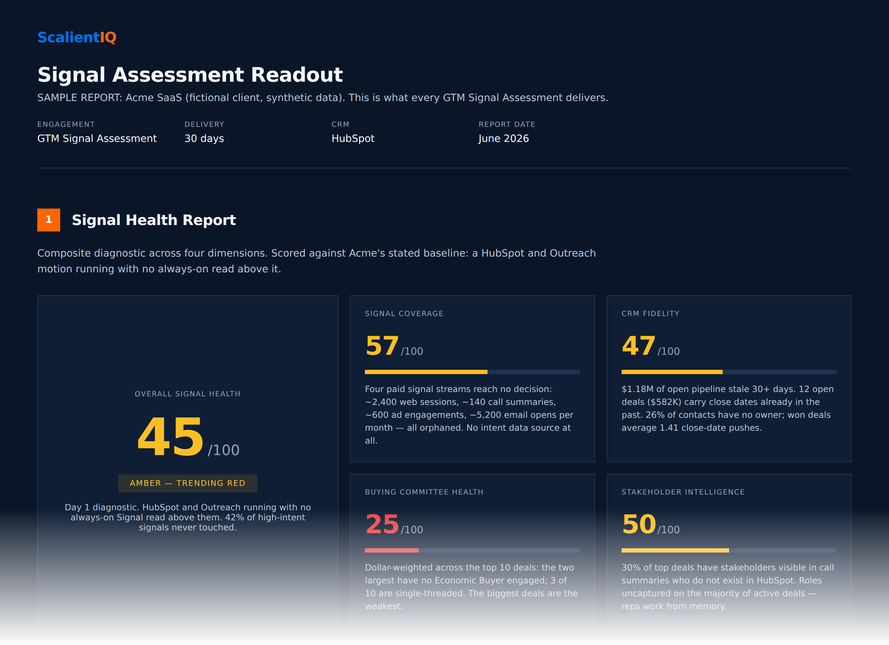
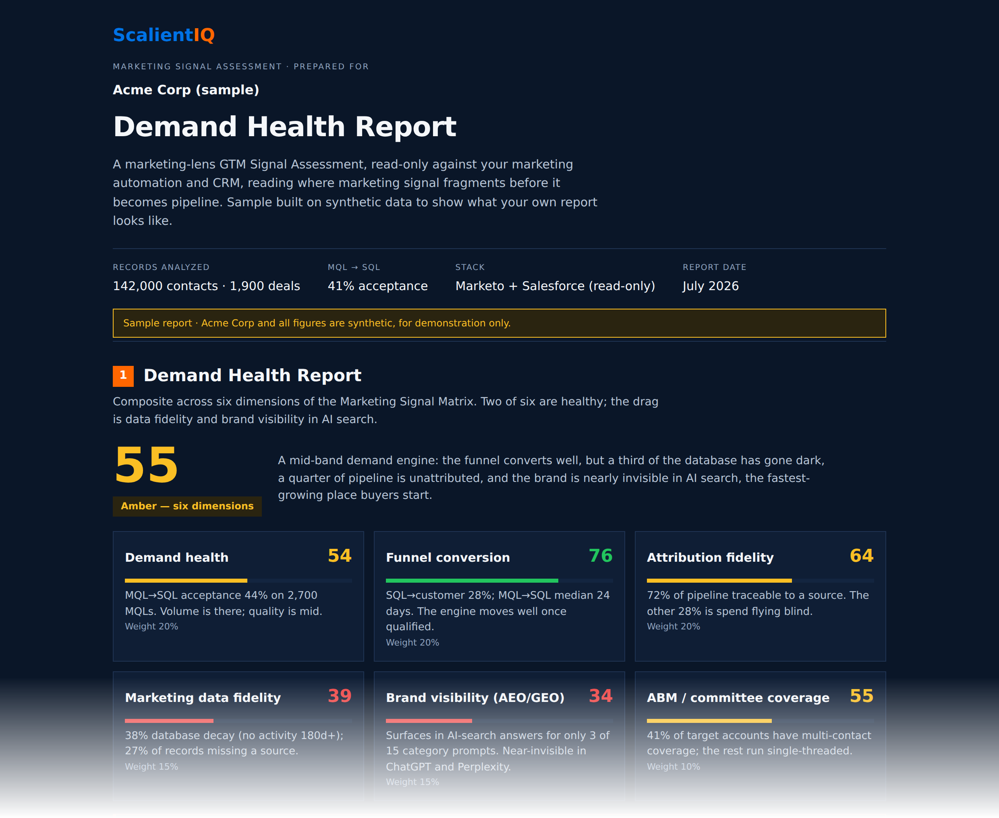

Scalient IQ measures success in revenue terms, not activity counts. It reads your live data across the tools you already run, surfaces the revenue leaks visible in your pipeline, data, deals, and AI-search visibility, and estimates the potential dollar impact where the data supports it. Below is a partial view of what a sample readout looks like.
Partial views of a sample GTM Signal Assessment, built on a fictional enterprise (Acme Corp) with synthetic data. The Sales lens delivers the Signal Health Report, the Demand lens delivers the Demand Health Report, and running both gives you the full-funnel view. Your assessment reads your own live data and delivers your own numbers, scored the same way. Figures shown are modeled estimates for discussion, not a guarantee.


Partial views. Sample data shown for illustration only. See what your own readout would surface.
The first read is designed to surface real, dollar-priced gaps in your live data that your team can act on. Dollar amounts are modeled estimates for business discussion, not a guarantee of ROI, recovered revenue, or any particular outcome.
This isn't a consulting engagement that ends with a slide deck. The read is always-on and refreshes on an always-on cadence: a living scorecard, not a report you wait a month for. Visible leaks come with an estimated dollar impact and the play attached, so your team knows exactly what to run and what closing each gap could be worth.
Why the read is grounded: it isn't subjective. The signals are real, the data is yours, and every number is pulled straight from live systems, then modeled into an estimate. We surface the leak and estimate its potential dollar impact. Your team executes.
Intelligence, not execution. The instrument panel, not the driver.
Disclaimer. Scalient IQ reports are based on read-only analysis of connected customer-authorized data and/or externally available information. Dollar amounts, pipeline impact, and upside ranges are modeled estimates for business discussion purposes and are not guarantees of revenue, pipeline recovery, deal velocity, sales performance, or customer outcomes. Customer execution, data quality, market conditions, sales process, and third-party platform changes may affect results.